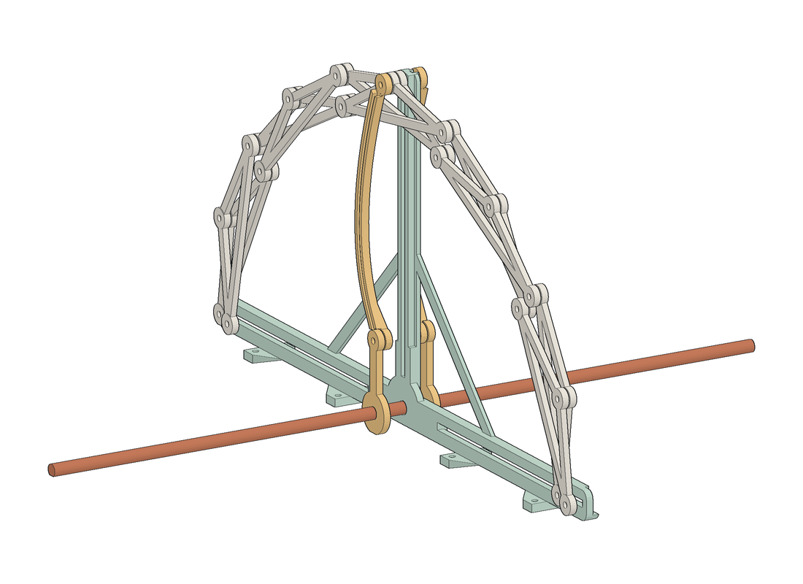
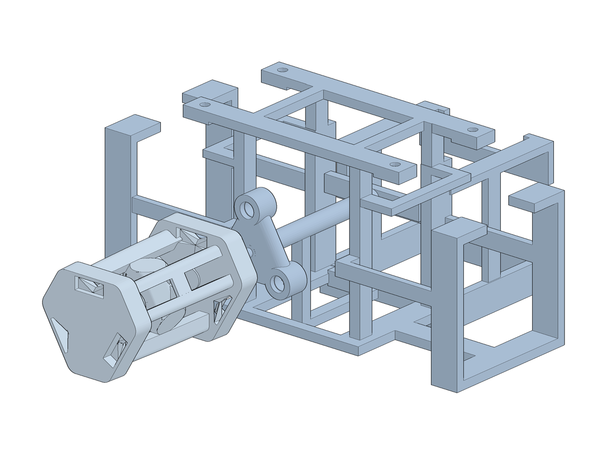
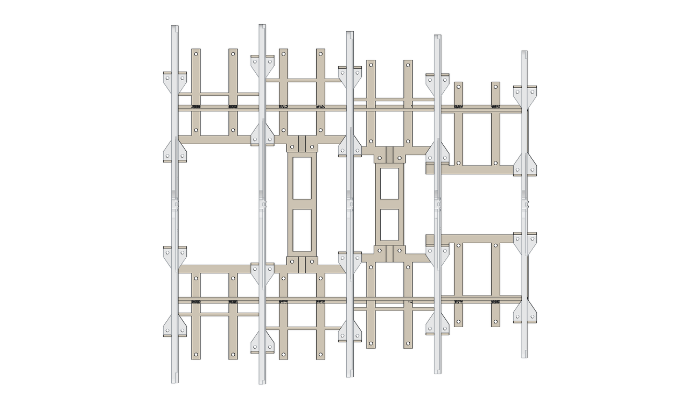

轮回机器 实体交接图册
这份图册交给接手装配和调试的老师与同学。它说明这台机器由哪些部件组成、怎么拼起来、用了哪些电机和传感器、它们各管什么、怎么接线，以及作者设想中这台机器要表现的行为在程序里怎么实现。

0.1怎么读这份图册
每条信息尽量标出它的来源和可信程度。看到黄色标签的地方，请先对照实物，或联系作者确认。
| 模型实测 | 从 815.3dm 里直接量出或渲染的几何。 |
| 作者记录 | 作者在日志、设计文档或讨论中写下的决定和实物情况。 |
| 设计意图 | 已经设计好、但没有做出来或没有在实物上验证过。 |
| 交接建议 | 编写这份图册时补充的建议做法，可以改。 |
| 待确认 | 记录之间互相矛盾，或者只能推断。请以实物为准。 |
方向约定
- 前：大触手伸出的方向（S1 环那一端）。后：S5 环那一端，主电机在这边。
- 站在机器后面朝前看：左手边是主电机所在一侧，右手边是大触手根部所在一侧。
- 五个环从前到后编号 S1–S5，相邻两环中心距 85。
- 高度从桌面算起。中间轴轴线离桌面 156。
- 图中的立体图都由 815.3dm 直接渲染；矢量图由同一份几何数据计算；凡是推断出来的布置都标「示意」。
0.2图纸目录
先读：模型与实物不一致的地方815.3dm 之后作者改过实物，模型没有跟着更新
815.3dm 是作者仓库里最新的整机模型，但 8 月中旬以后作者改过实物的传动和朝向机构，这些改动没有画进模型。下表列出已知的不一致。遇到冲突时以手上的实物为准，再回到这张表找原因。
| 部位 | 815 模型里 | 实物（按作者记录） | 本图册怎么处理 |
|---|---|---|---|
| 呼吸传动 | 中间轴 → 每环两片曲柄轮 → 两根驱动杆 → 拱顶销，中间轴 180° 往复 | 作者记录8/23 日志：中央驱动杆卡滞，改回齿条驱动，推拉脚部，仍由一根轴同步驱动五环。案例页参数：钢齿轮 m=1，齿数 32 / 33 / 32 / 29 / 25（S1–S5），商用钢齿条截断 + 打印 U 形卡接件，中轴摆角约 336° | 按齿条方案写（RM-HO-09）。图里不画曲柄和驱动杆。齿条接在哪只脚、几根，是由齿数反推的 待确认 |
| 眼柄 | 没有 | 作者记录已取消（9/10 作者确认），朝向改由整机偏航转台承担 | 不出现 |
| 偏航转台 | 中心一个 ⌀60 × 45 的圆柱占位 | 作者记录汉德保 HDB60XZ45B 蜗轮蜗杆旋转平台（45:1），自带 42 步进电机，改用 TMC2209 驱动 | 按实物型号写（RM-HO-11） |
| 轴上带轮 | 一个 ⌀16 的小带轮（20T 大小） | 作者记录定案为电机 20T、中轴 60T，3:1 减速 | 按 3:1 写 待确认 |
| 肌腱电机 | 大触手安装笼里有三个 NEMA17 尺寸的电机框 | 作者记录库存 NEMA17 共 3 台；主轴还要一台。采购单写「第四台 NEMA17 仅在肌腱定为三根独立驱动时购买」，有没有买没有记录 | 按三根肌腱各一台电机写；请清点电机数量 待确认 |
| 蒙皮 | 没有 | 作者记录截至 9/10 未制作 | 只写设计意图 |
| 电子与传感器 | 没有 | 作者记录器件已在库存或采购单上，没有装机和接线记录 | 接线与安装位置均为建议 |
| 固件 | — | 作者记录截至 9/10 未写。网站上有行为引擎的参考实现（TypeScript） | RM-HO-14 给出实现路径 |
| 环间距 | 逐对实测 85.000 | 案例页写「82.5 / 85 待确认」，330 mm 的旧包络长度是按 82.5 算的 | 按 85 写 |
作者 9 月 10 日的记录：新传动没有装完，蒙皮、固件、拍摄都还没做。请先给收到的实物整体拍照，再对照 RM-HO-05 的清单逐项清点，对照 RM-HO-06、07 的装配顺序确认已经装到哪一步。齿条传动的照片请发给作者核对 RM-HO-09 的示意图。
整机概览它是什么、能做什么、由哪些部分组成
这是一台放在桌上的机械生物。五个能开合的拱环组成它的身体，一起张开、一起收拢就是呼吸。前面一条由三根肌腱牵拉的大触手可以卷曲、伸向人、缠住手或东西。身体两侧各有一条舵机甩动的小触手。整机坐在一个能绕竖轴转动的平台上，可以转向人，也可以背过身去。它有四种性格，每一世经历诞生、成长、衰老、死亡，空白一段时间后换一种性格重新开始。

- 1呼吸环 S1–S5（五个 Hoberman 角化拱）
- 2滑轨架 ×5（脚槽 + 竖直导槽 + 中轴孔）
- 3中间轴 ⌀6 D 形钢轴
- 4轴上同步带轮（GT2）
- 5主电机支架（NEMA17，腰形槽调皮带）
- 6机身底盘：左右两副梯形支架
- 7笼架（立柱 + 上下框）
- 8偏航转台 HDB60XZ45B（模型为 ⌀60 圆柱占位）
- 9X 形底座与四个圆脚
- 10小触手（左），SG90 驱动
- 11大触手安装笼（三台肌腱电机）
- 12大触手：7 节椎节 + 3 根肌腱
五个动作通道
| 动作 | 做什么 | 由谁驱动 |
|---|---|---|
| 呼吸 | 五环同步张开、收拢；快慢和深浅随性格与情绪变化 | 1 台 NEMA17 → GT2 皮带 3:1 → 中间轴 → 每环齿轮 + 齿条 |
| 大触手 | 卷曲、朝某个方向弯、缠住手或物体 | 3 台 NEMA17，每台收放一根肌腱 |
| 小触手 ×2 | 前后甩动；被碰时猛地甩开 | 2 只 SG90 舵机 |
| 偏航 | 整机朝向人或背向人，±170° | HDB60 蜗轮转台 45:1 + 42 步进 |
| 声与光 | 呼吸声、哼声；张开时变亮 | PAM8403 + 喇叭；WS2812B 12 灯环 |
六路感知
| 通道 | 器件 | 读什么 |
|---|---|---|
| 小触手触摸 | MPR121 ch0–3 | 碰了哪一条、哪一面 |
| 壳体抚摸 | MPR121 ch4–5，铜箔电极 | 拍、摸、戳、按住，左半还是右半 |
| 在场与距离 | HC-SR04 超声 | 人在不在、远中近 |
| 敲击与拿起 | MPU6050，只取振动包络 | 被敲、被推、被拿起 |
| 声音 | 声音传感器模拟输出 | 拍手、说话 |
| 抓握 | MPR121 ch6（梢端电极）+ 三个张力开关 | 缠住的是人、是物，还是空的 |
作者记录六路输入在 2026-07-07 定型。时间（寿命、衰老、轮回）由程序内部时钟给出，不需要传感器。
- 外形（全开）
- 模型实测含大触手 780 长 × 387 宽 × 382 高；不含大触手的机身 387 × 387（四个圆脚的外包）。
- 呼吸幅度
- 最高的 S2 环全开时拱顶比中间轴高 221，按 815 模型折叠到 123（齿条方案折得略浅）；五环各自的数在 RM-HO-08。
- 重量
- 作者记录7 月底的载荷普查：压在机身底盘上约 1.53 kg，其中主电机 0.35 kg、大触手约 0.27 kg。之后加了转台和新底座，没有重新称过。
三视图与外形尺寸不含曲柄、连杆（已作废）；不含齿条、电子件、蒙皮（未建模）


模型实测三张图同一比例，尺寸为外包尺寸。
- 高度 382 由 S2 滑轨架竖直导槽的顶端决定。呼吸时机器总高不变，变的是拱的高度和宽度。
- 中间轴轴线离桌面 156，也就是脚槽所在的高度。
- 五环站位：S1 在最前，往后每隔 85 一个；滑轨架比各自的环面靠后 11。
- 大触手从机身右前方伸出，梢端离机身前缘约 390。整机转动时，梢端扫过的圆半径约 600，摆放时周围要留出空间。
爆炸图从下往上：底座 → 转台 → 笼架 → 机身底盘 → 滑轨架与中间轴 → 五个环

- 1五个呼吸环
- 2滑轨架 ×5
- 3中间轴（齿轮与齿条见 RM-HO-09）
- 4机身底盘
- 5主电机支架
- 6大触手安装笼
- 7大触手
- 8小触手（右）
- 9小触手（左）
- 10笼架
- 11偏航转台
- 12X 形底座
两大块：固定的和转动的
X 形底座和转台的壳体放在桌上不动。转台输出盘以上，笼架、机身底盘、滑轨架、五个环、主电机、三条触手全部一起绕竖轴转。电线因此要跨过转台，走线方法见 RM-HO-11。
旋转分界面在哪里。8 月作者的模型讨论里，笼架底板锁在转台输出盘上（笼架以上都转）。10 月网站上的整机台架按作者圈选，把笼架当作固定件、在笼架顶端加了一个展示用的圆柱轴承。本图册按前者写，请以实物为准。
零件清单与开箱核对打印件的数量来自模型；标准件和电子件来自作者的采购记录
左边的方框留给开箱清点时打勾。数量后面带 待确认 的，模型和记录对不上，按实物记下实际数量。
| 名称 | 数量 | 规格 / 尺寸 | 来源 | |
|---|---|---|---|---|
| A 底座与偏航（固定在桌面 + 转台） | ||||
| X 形底座：中心座、方框、四条斜臂 | 1 套 | 四个圆脚中心距约 351 × 351 | 模型实测打印 | |
| 圆脚 | 4 | ⌀36 × 10 | 打印 | |
| 偏航转台 HDB60XZ45B（含 42 步进电机、联轴器、刻度环） | 1 | 45:1 蜗轮，输出盘 ⌀60，5-M6；底部 2-⌀7 孔距 50；箱高 45 | 作者记录二手采购 | |
| 笼架：底板、立柱 ×4、上下两层框、两侧侧板、顶托架 ×4 | 1 套 | 底板 76 × 93.7 × 4；立柱 9 × 6 × 80 | 打印 | |
| B 机身底盘 | ||||
| 梯形支架（左、右） | 2 | 362.5 × 123.7；3.9 薄腹板，凸台处厚 12 | 打印 | |
| 横梁 | 2 | 27.7 × 96.1 / 117.7 × 3.9 | 打印 | |
| 侧拉杆 | 2 | 345.2 × 6 × 7.2 | 打印 | |
| 小卡件 | 4 | 6.9 × 16.2 × 6.1 | 打印 | |
| C 滑轨架 | ||||
| 滑轨架 S1–S5（脚槽 + 竖直导槽 + 斜撑 + 中轴孔 + 安装耳） | 5 | 厚 22.5；宽 348 / 350 / 336 / 330 / 299；中轴孔 ⌀6.15 | 打印 | |
| D 呼吸传动 | ||||
| 中间轴 | 1 | ⌀6 钢 D 轴，对边 5.5，长 370 | 作者记录钢 | |
| 主电机 NEMA17 | 1 | 0.51 N·m，1.7 A | 库存 | |
| 主电机支架（带腰形槽） | 1 | 63 × 92 × 61 | 打印 | |
| GT2 带轮 20T（电机）/ 60T（中轴） | 1 + 1 | 节圆 ⌀12.73 / ⌀38.20；孔径按轴，60T 用 ⌀6 孔 + 顶丝压在 D 面上 | 采购 待确认 | |
| 同步带 2GT-280 闭口 | 1 | 140 齿，宽 6；中心距约 99.2 | 采购 | |
| 钢齿轮 m=1 | 5 | 齿数 32 / 33 / 32 / 29 / 25（S1–S5） | 作者记录采购 | |
| 钢齿条 m=1（截断）+ 打印 U 形卡接件 | 按实物 | 按示意每环 2 根、每根不短于约 160 | 采购 + 打印 待确认 | |
| S1 端挡块 | 2 | 模型中为 6.4 × 18.2 × 9.7 的方块 | 打印 待确认 | |
| E 五个呼吸环 | ||||
| 角化件（V 形三点板） | 66 | S1 14、S2 14、S3 10、S4 14、S5 14；共 11 个全等类（RM-HO-08） | 打印（作者说环件为光敏树脂） | |
| S1 脚部配件 | 2 | 跟随所在的脚平移 | 打印 | |
| 铰点对锁螺丝（芝加哥螺丝） | 89 | S1/S2/S4/S5 各 19，S3 13；建议多备 10% | 采购 | |
| 脚滑块：M2 对锁螺母的光筒 + 尼龙垫 3.2 × 7 × 0.5 | 20 | 光筒 ⌀3.0（用卡尺确认） | 采购 | |
| F 大触手 | ||||
| 椎节（方盒骨架）+ 节间柔性联接 + 梢端盖 | 7 节 | 臂长约 358，节距 72 → 47 收锥 | 打印（联接件 TPU） | |
| 安装笼（含三个电机框） | 1 | 电机框外 49.9 × 49.8，内口约 43.8 | 打印 | |
| 肌腱电机 NEMA17 | 3 | 同主电机 | 库存 待确认 | |
| 绕线轮：GT2 20T 铝带轮（5 mm D 孔 + M3 顶丝） | 3 | 当绕线轮用 | 库存 | |
| 肌腱：PE 编织线 | 3 根 | 0.4–0.5（30–40 lb） | 采购 | |
| 张力检测：张紧惰轮 + 小拉簧 + 长杠杆微动开关 | 3 套 | 开关动作力要明显小于弹簧预紧力 | 设计意图采购单已列 | |
| G 小触手 | ||||
| SG90 舵机 | 2 | 21 齿花键，保留原厂尼龙舵盘作接口 | 库存 | |
| 安装板、圆盘转轴、大节、软杆、小块 | 2 套 | 左右镜像；软杆 3.9 × 3.9 × 26 | 打印 | |
| H 电子（详见 RM-HO-12） | ||||
| ESP32 WROOM-32 开发板（38 针） | 2 | 收货时看清 USB 口型 | 采购单 | |
| TMC2209 步进驱动 | 5 | 主轴 1 + 肌腱 3 + 偏航 1；库存记录为 4 只 | 库存 缺 1 | |
| 12 V 5 A 电源 + DC 母座；XL4015 降压模块（12 → 5 V） | 1 + 1 | XL4015 先调到 5.0 V 再接负载 | 库存 / 采购单 | |
| MPR121、MPU6050、HC-SR04、声音传感器 | 各 1 | HC-SR04 的回波脚要分压到 3.3 V | 库存 | |
| PAM8403 功放 + 4 Ω 3 W 喇叭（⌀28–40）；WS2812B 12 灯环 | 各 1 | 采购单 | ||
| 电容：100 µF / 25 V（每只驱动一颗）、470–1000 µF | 5 + 4 | 大电容建议用 25 V | 库存 / 采购单 | |
| 微动开关：主轴零位、偏航零位 | 2 | 另加 3 只张力开关（F 组） | 交接建议 | |
| 导电铜箔胶带（≥10 宽）、30 AWG 硅胶线、XH2.54 端子、热缩管、电机减振垫 | 若干 | 采购单 | ||
装配顺序（一）底座到滑轨架每步图中，新装的件上色，已装好的件为浅灰
步骤 1X 形底座与偏航转台

- 把四条斜臂、方框和中心座拼成 X 形底座，装上四个圆脚。
- 转台壳体用两颗螺丝固定到中心座上（转台底部 2-⌀7 通孔，孔距 50；底面中心另有一个 M6 螺孔，深 7）。
- 先不要通电转动转台。电线怎么跨过转台，看 RM-HO-11。
作者记录稳定性估算：倾覆角约 42°，最不利方向约 28.6°。建议让四个圆脚独占触地（中心座底面抬高 1.5–2），光滑桌面加橡胶垫。
步骤 2笼架

- 笼架底板用 M6 螺丝锁到转台输出盘（盘面 5-M6：⌀25 圆周上 4 个 + 中心 1 个）。打印件上的过孔 ⌀6.4，贴合盘面的区域做成 5–6 厚的实心。
- 装四根立柱、上下两层框、两侧侧板，最后装立柱顶部的四个托架。
作者记录有限元结论：偏载时立柱顶部交角最危险。在立柱顶部和底部共 8 个交角各加一块 10 × 10 三角肋，承载可从约 3.2 kg 提到约 5 kg。
步骤 3机身底盘

- 两根横梁落到立柱顶托架上。
- 左右两副梯形支架搭在横梁上，与笼架顶部搭接；横梁与支架交接处装四个小卡件；沿两副支架各装一根侧拉杆。
- 梯形支架的 3.9 薄腹板不要攻丝。所有连接用通孔螺栓 + 螺母 + ⌀10 垫圈。
梯形支架下面是挂件位置：右侧挂大触手安装笼（S1–S2 下方）和右小触手（S3–S4 之间）；左侧挂左小触手（S2–S3 之间）和主电机支架（S4–S5 之间）。重件和会振动的件尽量挂在靠近立柱的位置。
步骤 4五副滑轨架

- 按 S1（最前）到 S5（最后）的顺序，把滑轨架的安装耳落在梳齿上，站距 85。
- 先不拧紧。拿中间轴从五个中轴孔（⌀6.15）一起穿过，确认能用手顺滑转动，再逐个拧紧。五个孔不同轴，轴会卡或者别劲。
- S1 和 S5 两端的安装螺栓必须全部装上。
作者记录7/18 有限元：脚槽两侧的窄边在 20 N 按压下会弯约 1.55，加背肋和前缘翻边后降到 0.34。最后一版加了背肋，前缘翻边还没补（RM-HO-15）。
装配顺序（二）传动、五环与触手齿轮和齿条没有建模，这一步的图只画到中间轴和电机支架
步骤 5中间轴、齿轮、主电机

- 中间轴从后（S5 端）穿入五个中轴孔，途中依次套上五个钢齿轮（每环一个，齿数见 RM-HO-09）和中轴上的 60T 带轮（S4 与 S5 之间）。
- 齿轮和带轮用顶丝锁在 D 形平面上，顶丝正对平面中央，涂螺纹胶（乐泰 243）。五个齿轮的安装相位要一致，标定方法见 RM-HO-14。
- 主电机装进支架，支架挂到左梯形支架下面。套上 2GT-280 皮带，沿腰形槽移动电机调张力，宁松勿紧。带轮要紧挨一个支撑点，减少轴被皮带拉弯。
步骤 6五个呼吸环

- 每个环先平放在桌上按 RM-HO-08 的展开图拼好。所有铰点用对锁螺丝作轴，打印件套在外面转，中间抹硅脂。
- 转动的那层轮毂要比对锁螺丝的套筒短 0.2–0.5。等长或更长会被螺丝轴向夹死。
- 四只脚的光筒放进水平脚槽，拱顶销放进竖直导槽。
- 两只内侧脚用 U 形卡接件接到齿条上，外侧脚自由滑动（RM-HO-09）。
- 装完后用手慢慢转中间轴，五个环应同步开合，全程没有卡点。
步骤 7两条小触手

- 安装板用螺栓固定到梯形支架下面：右侧那条在 S3 与 S4 之间，左侧那条在 S2 与 S3 之间。
- 装舵机前先把 SG90 转到中位（90°），再装舵盘，让大节自然竖直下垂。
- 舵机线沿梯形支架内侧走，过关节的地方留伸缩余量。
步骤 8大触手

- 三台 NEMA17 装进安装笼的三个电机框，每台装一个 GT2 20T 带轮当绕线轮。
- 安装笼用螺栓固定到右梯形支架下面（S1–S2 下方）。
- 穿肌腱：梢端绑柱 → 各节腱孔 → 根部 → 绕线轮，方法见 RM-HO-10。先穿线再上电。
设计意图用织物蒙皮跨接相邻两环，锚固在每环外侧铰点上，随环一起呼吸；蒙皮同时是发声的共鸣腔。蒙皮还没有做，材料没有定。呼吸时两环之间的距离不变，但每个环的宽和高会缩到约 70%，所以布料要有弹性（例如莱卡类弹力布）。网站上的整机台架里画了半透明蒙皮，可以参考效果。
- 主控板和驱动板装在转台以上的部分（例如笼架内），这样跨过转台的线最少：只有 12 V 电源线、偏航电机线和偏航零位开关线。
- 跨转台的线留 15–20 cm 螺旋余量，转台软件限位 ±170°。
- 小触手和壳体的电极线远离舵机线和电机线。电极引线本身也会感应触摸，不要走在手碰得到的地方。
五个呼吸环Hoberman 角化剪式拱：脚往里收，整个拱等比缩小

- 1角化件（V 形三点板），本环 10 件
- 2拱顶销，在竖直导槽里上下滑
- 3竖直导槽
- 4斜撑
- 5外侧脚（自由滑动）
- 6内侧脚（齿条推拉的那一只）
- 7水平脚槽（槽宽 3.4–3.6）
- 8中轴孔 ⌀6.15（D 形轴直接穿过）
- 9安装耳（螺栓固定到底盘梳齿上）
它怎么动
每个环由一串 V 形的三点板（角化件）铰接而成，相邻两块共用铰点。环底部有四只脚，每侧两只，都在同一条水平脚槽里。两只内侧脚被推向中间时，整个拱均匀地缩小，高度和宽度一起变；推回去就整体张开。这就是「呼吸」。
这种机构只有一个自由度，五个环由同一根中间轴带动，所以五环同相：同时张开，同时收拢。各环的大小不同，所以行程不同。
不能破坏的三条
- 每块角化件的两条臂等长；拱的夹角序列左右对称，四只脚才会一直在同一条直线上。
- 收缩的极限是零件相碰，不是机构卡死。不要硬推。
- 缩放过的环，关节凸台 ⌀10、销环 ⌀6 这些尺寸是绝对量，不随环缩放。
8.1五环全开与折叠
模型实测五环同一比例。铰点画成小圆，橙点是中间轴轴心，虚线是脚槽所在的地线。折叠时三点板转向内侧，像一圈尖齿，这是这种机构的正常样子。折叠位取自 815 模型曲柄方案的另一端死点；齿条方案大约只走内侧脚全行程的 91–94%，实际折得略浅（RM-HO-09）。
| 环 | 基型 × 比例 | 站位 x | 角化件 | 铰点 | 脚 | 全宽 开/合 | 拱顶高 开/合 | 内侧脚行程 | 外侧脚行程 | 旧曲柄 r |
|---|---|---|---|---|---|---|---|---|---|---|
| S1 | M3 × 1.057 | -170 | 14 | 19 | 4 | 335 / 228 | 126.3 / 66.5 | 99.4 | 53.6 | 29.9 |
| S2 | M1 × 1.184 | -85 | 14 | 19 | 4 | 345 / 260 | 221.2 / 123.4 | 104.8 | 42.9 | 48.9 |
| S3 | M5 × 1.584 | +0 | 10 | 13 | 4 | 324 / 255 | 157.3 / 87.8 | 102.6 | 36.3 | 34.7 |
| S4 | M3 × 1.000 | +85 | 14 | 19 | 4 | 317 / 216 | 119.2 / 63.0 | 93.3 | 50.7 | 28.1 |
| S5 | M3 × 0.870 | +170 | 14 | 19 | 4 | 276 / 188 | 103.3 / 54.9 | 79.8 | 44.0 | 24.2 |
8.2角化件的 11 个全等类
| 类 | 环 | 臂长 | 两端距 | 夹角 | 件数 |
|---|---|---|---|---|---|
| 1 | S3 | 49.4 | 95.5 | 150° | 4 |
| 2 | S3 | 49.4 | 92.9 | 140° | 6 |
| 3 | S2 | 43.8 | 86.2 | 160° | 8 |
| 4 | S2 | 43.8 | 84.5 | 150° | 4 |
| 5 | S2 | 43.8 | 82.3 | 140° | 2 |
| 6 | S1 | 33.0 | 65.0 | 160° | 10 |
| 7 | S1 | 33.0 | 62.0 | 140° | 4 |
| 8 | S4 | 31.2 | 61.4 | 160° | 10 |
| 9 | S4 | 31.2 | 58.6 | 140° | 4 |
| 10 | S5 | 27.1 | 53.5 | 160° | 10 |
| 11 | S5 | 27.1 | 51.0 | 140° | 4 |
同一类的件在环内靠旋转、翻面复用，不能跨环通用。上表与 815 模型里每块板的销距逐一核对过。
8.3铰点和脚的做法
- 铰点：两片 ⌀10 × 4 的圆盘凸台面对面，一颗对锁螺丝（芝加哥螺丝）当轴，打印件套在螺丝套筒外面转，抹硅脂。径向间隙 0.2–0.4。
- 防夹死：转动层的轮毂比套筒短 0.2–0.5。想要一点阻尼，可以加波形垫圈，不用平垫。
- 脚：M2 对锁螺母的光筒（常规 ⌀3.0，用卡尺确认）在槽里滑，不是螺纹在滑。只在金属头直接压到槽板的那一侧垫一片尼龙垫（3.2 × 7 × 0.5）；两侧都垫会夹死。
- 槽宽：FDM 打印按 3.6 画（实际打出约 3.3），SLS 按 3.4 画。
- 拱顶销：在滑轨架的竖直导槽里上下滑。齿条方案里它不再是驱动点，只起导向作用；实物上是否保留以实物为准。
作者记录SLS 打印的活动件单边留 0.4 间隙，打出来还是粘死，所以改用金属螺丝作轴。材料方面，作者说环件是光敏树脂；树脂件不要直接攻丝。
呼吸传动一台电机 → 中间轴 → 五个齿轮 → 齿条 → 内侧脚
9.1齿条怎么推动环 示意 · 待确认
8/23 的日志写：中央驱动杆因摩擦卡滞，改回「脚部双向推拉的齿条方案」，仍用一根轴同步驱动五环。8/24 的日志记录了五环各自的行程，范围 78.8–104.2 mm，这和五环内侧脚的全行程（79.9–104.8）对得上，和拱顶的行程（48–98）对不上。
再用齿数验算：模数 1 的齿轮转 336°，齿条走 π × 齿数 × 336 / 360。五个环算出来都是内侧脚全行程的 91–94%，比例一致（下表）。所以齿条推的是内侧脚，而且留了 6–9% 的余量，正好避开「张到最大时偶尔卡住」的那一段。
上图画的是一种对称布置：上下两根齿条夹着齿轮，反向移动，各带一只内侧脚。这一点记录里没有写明，可能是每环一根齿条配合竖直导槽。请拍照给作者核对。
旧的曲柄方案在两端有天然死点，电机多转也推不坏环。齿条方案没有：中间轴多转一点，齿条就把脚顶到槽底或把环压坏。必须装零位开关、在固件里设软限位，第一次上电用小电流、低速，手放在急停（拔电源）旁边。
| 环 | 齿数 z | 节圆 ⌀（m=1） | 齿条行程（中轴转 336°） | 内侧脚全行程 | 齿条 / 内侧脚 | 外侧脚行程（自由滑） |
|---|---|---|---|---|---|---|
| S1 | 32 | 32 | 93.8 | 99.4 | 94% | 53.6 |
| S2 | 33 | 33 | 96.8 | 104.8 | 92% | 42.9 |
| S3 | 32 | 32 | 93.8 | 102.6 | 91% | 36.3 |
| S4 | 29 | 29 | 85.0 | 93.3 | 91% | 50.7 |
| S5 | 25 | 25 | 73.3 | 79.8 | 92% | 44.0 |
9.2主电机与皮带

- 1中间轴 ⌀6 D 形，长 370
- 2轴上带轮（模型画成 ⌀16，按定案应为 60T）
- 3主电机支架：NEMA17 装在框内
- 4腰形槽：移动电机调皮带张力
- 5滑轨架的中轴孔（兼作滑动轴承）
- 6S1 端两块挡块（模型为方块，作用待确认）
- 电机
- NEMA17，0.51 N·m，1.7 A，TMC2209 驱动 作者记录
- 电机轴
- 库存电机是 ⌀5 D 轴（对边 4.5）；7/09 作者上传的电机图纸（42-22APro）是 ⌀6 × 25。20T 带轮孔径按手上电机实测 待确认
- 减速
- 20T / 60T，3 : 1；节圆 ⌀12.73 / ⌀38.20
- 皮带
- 2GT-280 闭口，140 齿，宽 6，中心距约 99.2；支架腰形槽可调 97.5–101.5
- 力矩
- 峰值设计 0.3–0.5 N·m（重力与摩擦为主）。3 : 1、电流 1.2–1.4 A 时轴上约有 0.7–0.9 N·m（估算，未实测）
- 分辨率
- 1/16 微步：电机 3200 步/圈，中间轴 9600 步/圈，336° ≈ 8960 步
- 轴承
- 五副滑轨架的 ⌀6.15 孔直接当滑动轴承
9.3815 模型里的旧方案（只用来看懂模型和网站）

7 月的方案是曲柄滑块：中间轴上每环一对曲柄，驱动杆把拱顶销沿竖直导槽上下推，中间轴只在 180° 内往复，两端恰好是死点。曲柄半径 S1–S5 为 29.9 / 48.9 / 34.7 / 28.1 / 24.2，杆长 97.1 / 173.5 / 124.2 / 92.0 / 80.3。
实物上这个方案出现过两个问题：驱动杆离导轨远、受力后变形，推拉不畅；中央单杆摩擦卡滞。作者因此改回齿条。网站上的 Lab 1-4、1-5、1-6 仍按曲柄方案模拟，动作看起来一样，但传动不同。
大触手：三根肌腱一根完整的线锚在梢端，从根部往回拉，触手就弯

- 1安装笼（挂在右梯形支架下）
- 2第 1 节椎节（最粗）
- 3第 7 节椎节
- 4梢端：三根肌腱各绑在自己的绑线柱上

- 1电机框 A（约 50 × 50，内口约 44，装 NEMA17）
- 2电机框 B
- 3电机框 C（在下方）
- 4根部连接件：肌腱从这里进入触手
- 5第 1 节椎节
- 6顶板：螺栓固定到机身底盘下面
结构
- 7 节方盒椎节，从根到梢逐节变小（节距 72 → 47），节与节之间用 TPU 柔性件连接，可以弯但抗扭。
- 梢端那一节里有三根绑线柱，三根肌腱各绑在自己的柱上。
- 根部连接件上有三个腱孔（离轴约 13.1），肌腱从这里进入触手。
- 安装笼里三个电机框，各装一台 NEMA17，电机轴上的 20T 带轮当绕线轮。
作者记录作者的原话：「肌腱其实是一条完整的线，固定在最远端一个节点上，最根部的那一点往后拉，整体地被往后拉让触手弯起来。」
10.1肌腱怎么走
行程与绕线
- 每根肌腱最多收 44 mm：前 12 mm 只是把装配时留的松弛收直，触手不动；之后 32 mm 让触手卷曲。单根拉满时呈 J 形，每个关节弯 15–25°，越往梢端弯得越多。
- 松弛不能省：一根肌腱拉紧时，对面两根的路径会变长。12 mm 的松弛大约容许 180° 的总卷曲。
- 绕线轮用 GT2 20T 带轮（节圆 ⌀12.7，一圈约 40 mm），44 mm 约 1.1 圈。线在轮上的实际直径以实测为准。
- 三根一起收同样多，触手只是绷紧、不弯；弯的方向由三根的差决定。
抓握检测 设计意图
缠绕本身不需要反馈，欠驱动结构会自己顺序包住。传感只回答三件事：什么时候开始、什么时候停、缠住的是什么。
| 张力开关 | 梢端电极 | 判定 | 动作 |
|---|---|---|---|
| ✓ | ✓ | 缠住了人（手指） | 社交握持：极轻，随时可拔出 |
| ✓ | ✗ | 缠住了物 | 保持握住 |
| 走到限位仍 ✗ | — | 抓空 | 松开，然后找一找 |
| 握持中张力消失 | 脱手 | 按性格：追一次或放弃 | |
张力开关：每根肌腱在根部过一个弹簧张紧的惰轮，惰轮被拉过阈值时压下长杠杆微动开关。选开关只看一条：动作力要明显小于弹簧预紧力。电容电极对人的皮肤有反应、对木头笔杆没有，正好用来区分人和物。
深度卷曲（主腱拉满、梢端最快 600–750 mm/s）有脱缆和绕线轮疲劳的风险。调试时先限制在 30 mm 以内，确认走线顺畅再放开。
小触手、偏航转台与底座

- 1安装板（螺栓固定到底盘下面）
- 2SG90 舵机
- 3圆盘转轴：大节绕它前后甩
- 4大节（叉形，约 49 长）
- 5软杆 3.9 × 3.9 × 26（被动弯曲）
- 6小块（被动，跟着甩）
11.1小触手
SG90 舵机带动圆盘转轴，大节绕转轴前后甩动（摆动平面沿机身前后方向）。大节下面经一段软杆连着一个小块，小块不受驱动，跟着甩，甩起来会有鞭梢的感觉。两条小触手左右镜像安装，同一个舵机角度在两条上表现为一前一后。
- 舵机
- SG90，21 齿花键。保留原厂尼龙舵盘作接口，自制件用 M2 螺丝锁到舵盘上
- 待机
- 网站上的待机摆动约 ±18°、0.5 Hz（手感参数，未在实物上定）
- 被碰
- 猛地甩开，首个峰值约 54°，3.5 秒内衰减；舵机角度限制在 ±75°
- 电极
- 每条两路（两个面各一路），用于判断从哪一面碰的。会弯的部分用 30 AWG 细线本身当电极，焊点全部收进不动的刚性件里
待确认早期设计的触须是镍钛或玻纤芯 + 硅胶套；815 模型里是舵机 + 大节 + 软杆 + 小块。以实物为准。
11.2偏航转台 HDB60XZ45B
- 型号
- 汉德保 HDB60XZ45B，蜗轮蜗杆，45 : 1，断电自锁，原厂波纹管联轴器，带刻度环 作者记录
- 电机
- 随转台的 42 步进（标签 1704HS20D5 / SM1705，两种说法）
- 驱动
- 用 TMC2209，不用随附的 S-224D（噪声大、要 24 V、光耦输入 ESP32 推不动）。电流 1.0–1.2 A
- 换算
- 1/16 微步：200 × 16 × 45 = 144 000 步/圈 = 400 步/度。输出最快约 40°/s
- 尺寸
- 输出盘 ⌀60，5-M6（⌀25 圆上 4 个 + 中心 1 个）；底部 2-⌀7 通孔，孔距 50，耳板宽 60；底面中心 M6 深 7；箱高 45；含电机总长约 147；宽 67.5（含插头 78.5）
- 行程
- 软件限位 ±170° 交接建议。行为引擎输出 ±180°，固件里截到 ±170°
- 零位
- 微动开关 + 拨片，开机慢转压到开关处记为 −170°。调试初期也可以先手动拧到刻度 0 再上电
- 走线
- 按作者记录这台转台不是中空的，线从外侧绕，留 15–20 cm 螺旋余量 待确认
11.3底座与笼架

- 1偏航转台位置（⌀60 × 45 占位）
- 2笼架底板（螺栓锁到转台输出盘）
- 3笼架立柱 ×4
- 4立柱顶托架（托住机身底盘的横梁）
- 5底座中心座
- 6圆脚 ×4
四个圆脚中心约在 ±175 的方框上。笼架底板锁在转台输出盘上，四根立柱托起机身底盘。

- 1右梯形支架 362.5 × 123.7
- 2左梯形支架
- 3后横梁（落在笼架立柱上）
- 4前横梁
- 5侧拉杆 ×2
- 6梳齿：滑轨架的安装耳落在这里
电子系统与接线作者没有留下引脚表；下面的分板和引脚是按 ESP32 的限制排出来的建议
12.1为什么用两块 ESP32 交接建议
五台步进电机各要 STEP、DIR 两根线，再加两只舵机、五个开关、I²C、超声、声音、灯带、音频，一块 ESP32 的可用引脚不够。采购单上本来就买了两块 ESP32，所以拆成两块：运动板只管电机、舵机和限位开关；感知板管传感器、声光和行为程序，两块之间用串口通信。
12.2供电
- 12 V 5 A 电源 → 12 V 母线 → 五只 TMC2209 的 VM。每只驱动在 VM 与 GND 之间就近并一颗 100 µF / 25 V。
- 12 V → XL4015 降压 → 5 V 母线 → 两块 ESP32 的 5V 脚、两只 SG90、WS2812B、PAM8403、HC-SR04、声音传感器。XL4015 出厂电压不一定是 5 V，先空载调到 5.0 V 再接负载。
- MPR121、MPU6050 用感知板的 3.3 V。
- 所有地线接在一起。
- 严禁带电插拔电机线，会烧 TMC2209。
感知板 ESP32-S 引脚 交接建议
| GPIO | 接到 | 说明 |
|---|---|---|
| 21 / 22 | I²C SDA / SCL | MPR121（ADDR 接 GND，地址 0x5A）、MPU6050（AD0 接 GND，地址 0x68） |
| 39 | MPR121 IRQ | 可选；只能输入，外接上拉 |
| 13 | HC-SR04 TRIG | HC-SR04 用 5 V 供电 |
| 36 | HC-SR04 ECHO | 经分压到 3.3 V（例如 1 kΩ 串联、2 kΩ 对地） |
| 34 | 声音传感器 AO | ADC1；只读包络 |
| 4 | WS2812B DIN | 串 330 Ω；3.3 V 数据下闪烁再加 74HCT125；灯带电源并 470–1000 µF |
| 25 | PAM8403 输入 | DAC1，经 1 µF 隔直 + 10 kΩ 电位器 |
| 16 / 17 | 与运动板串口 | RX ← 运动板 TX，TX → 运动板 RX |
运动板 ESP32-M 引脚 交接建议
| GPIO | 接到 | 说明 |
|---|---|---|
| 32 / 33 | 主轴 STEP / DIR | |
| 25 / 14 | 腱 A STEP / DIR | |
| 18 / 19 | 腱 B STEP / DIR | |
| 21 / 22 | 腱 C STEP / DIR | 这块板不用 I²C |
| 26 / 27 | 偏航 STEP / DIR | |
| 23 | 五只驱动的 EN | 低电平使能；加 10 kΩ 上拉到 3.3 V，开机时电机不动 |
| 13 / 4 | SG90 左 / 右 | 50 Hz PWM；舵机电源取 5 V 母线 |
| 34 / 35 | 主轴零位 / 偏航零位开关 | 只能输入，外接 10 kΩ 上拉，开关接地 |
| 36 / 39 / 5 | 张力开关 A / B / C | 同上；GPIO5 可用内部上拉 |
| 16 / 17 | 与感知板串口 |
TMC2209 设置
- 不接 UART，用独立模式：微步用模块上的 MS1、MS2 设到 1/16（组合见所买模块的说明）。
- 电流用 Vref 电位器调，公式见模块说明。主轴和肌腱电机先给约 0.6 A，确认不丢步再加；偏航电机 1.0–1.2 A。
- 先调 Vref，后接电机。
MPR121 通道
- ch0 / ch1：左小触手的两面；ch2 / ch3：右小触手的两面。
- ch4 / ch5：壳体左半 / 右半的铜箔电极。
- ch6：大触手梢端电极（判断缠住的是不是人）。ch7–11 备用。
- 上电那一刻不要碰任何电极（芯片会把当时的值当基线）。
安装位置 交接建议
- HC-SR04：机身前端、S1 下方朝前。它随转台转动，测到人时机身的朝向就是人的方位。
- MPU6050：刚性固定在机身底盘中部，离电机远一点，电机下垫减振垫。
- 声音传感器：后部，远离喇叭。
- 喇叭：S2–S3 之间的壳体内，朝上（蒙皮做好后就是共鸣腔）。灯环：S3 下方中央朝上。
四组自干扰（作者 7/07 已定对策方向）
- 电机振动 → 加速度计：只用振动包络，电机加减速时屏蔽敲击判定。
- 喇叭 → 声音传感器：自己发声时不判拍手。
- 手贴在壳上 → 超声读数失效：读数突然失效时当作「有人很近」，不当作「人走了」。
- 长时间按住 → MPR121 基线漂移，超过约 10 秒会误判松手：按住期间冻结基线更新。
行为：它设想中要做的事同一具身体，四种性格，一世一世地过
这台机器的看点是行为，不是外形。它的每一世都按同一套程序走，但性格不同：呼吸的快慢深浅、被碰后多快回应、多久自己动一下、喜不喜欢朝着人，都由一组数决定。下面是作者已经在网站上实现的行为设计（部分数值还在调），固件照着它做。
13.1四种性格 数值待作者拍板
| 参数 | A 热情 | B 沉静 | C 回避 | D 乱序随机 |
|---|---|---|---|---|
| 呼吸周期（平时） | 3.5 s | 4.5 s | 4 s | 3.2–4.8 s |
| 呼吸幅度（平时） | 70% | 60% | 50% | 45–75% |
| 运动速度 | 3 cm/s | 0.5 cm/s | 2 cm/s | 0.5–4 cm/s |
| 响应延迟 | 0.2 s | 2.5 s | 0.3 s | 0.3–3 s |
| 回应幅度 | +50% | +10% | +40% | 10–50% |
| 自发动作间隔 | 3–5 s | 20–30 s | 10–16 s | 2–30 s |
| 声音基频 | 800–1200 Hz | 150–300 Hz | 1000–1400 Hz | 200–1200 Hz |
| 发声占空比 | 70% | 25% | 10% | 10–80% |
| 朝向变化间隔 | 5–8 s | 30–45 s | 8–12 s | 3–15 s |
| 朝向人的概率 | 90% | 25% | 5% | 50% |
| 不朝人时 | 随便看 | 随便看 | 背向人 | 背向人 |
| 惊吓阈值（0–1） | 0.8 | 0.95 | 0.25 | 0.2–0.9 |
| 对人的趋避 | +1 | 0 | −1 | ±0.4–1 |
| 死亡方式 | 精力渐尽，最后朝向人停下，90 s | 安静地慢慢停下，120 s | 背过身慢慢停下，90 s | 节律紊乱后渐弱，60 s |
D 的区间每次重新抽，偏向两端。四种性格的出场顺序按被试做拉丁方平衡（作者 9/10 确认）。被碰之后呼吸会变快变浅（情绪唤醒），过一会儿回落；平时四种性格的呼吸都在每分钟 13–16 次。
13.2它能感觉到的九类事件
| 事件 | 来自 | 刺激强度 |
|---|---|---|
| 有人来 / 走近 / 离开 | 超声 | 走近一档 0.2 |
| 碰小触手 | MPR121 ch0–3 | 0.4 |
| 拍、摸、戳壳体 | MPR121 ch4–5 | 0.3 / 0.1 / 0.6 |
| 按住壳体 | MPR121 ch4–5 持续 | 0.2 |
| 被拿起 | MPU6050 + 超声失效 | 0.7 |
| 被敲 | MPU6050 瞬态 | = 敲击强度 |
| 声音 | 声音传感器 | 拍手约 0.8，说话约 0.3 |
| 碰大触手 | MPR121 ch6 | 0.4 |
| 肌腱受阻 | 张力开关 | 只给抓握逻辑 |
刺激强度超过当前性格的惊吓阈值就惊跳（0.1 秒的反射：大触手猛缩、身体猛收、屏住），否则按响应延迟回应。回应的样子随性格不同：迎上去、原地、或躲开。
抓握之后
- 脱手：热情型追一次（再缠），沉静和回避放弃，乱序随机一半一半。
- 抓空后找一找：热情 2 次，沉静 1 次，回避 0 次，乱序随机 0–2 次。
- 惊吓或死亡时一律松手（死亡时松得慢一倍）。
13.3程序输出什么，硬件怎么执行
| 输出 | 含义 | 硬件换算 交接建议 |
|---|---|---|
breath.s | 行程分数：0 = 全开，1 = 折叠，已是平滑的呼吸轨迹 | 中间轴角度 = 零位 + s × 标定的全行程角（约 336°）→ × 3 → 主电机步数 |
arm.tone / bend / dir / wrap | 大触手的张力、弯曲量、弯向、额外卷深 | 先换成三根肌腱的收缩率 c₀, c₁, c₂（0–1），再 × 44 mm 得收线长度 → 绕线轮转角 → 步数 |
feelers[0], [1] | 左右小触手的摆角与惊跳波形 | 舵机角 = 90° + 摆角，限制在 ±75° |
yaw | 整机朝向（弧度，±π） | 截到 ±170° → 400 步/度 |
light.level | 亮度 0–1，随张开变亮 | WS2812B 整体亮度 |
sound | 是否发声、基频、占空比、音量 | DAC 或 PWM 合成音调，经 PAM8403 放大 |
肌腱的换算公式在网站代码里（三腱分解，按 120° 方位的余弦加权，并补偿弯向误差），建议直接照搬，不要自己重新推。网站 Lab 1-6 右侧的「实时输出面板」显示的就是这几路量的实时数值，可以对着看。
固件实现路径、联调与标定
现在没有任何固件。行为部分有一份完整的参考实现：作者网站上的行为引擎（TypeScript，纯计算、不依赖网页），它吃传感事件，按性格和生命阶段输出上一页的那几路执行量，并把同一条事件流记成实验日志。下面三条路由快到慢排列。
路线 A：电脑跑引擎，ESP32 只执行 推荐
- 感知板把传感器读数整理成上一页的九类事件，经 USB 串口一行一个发给电脑。
- 电脑用 Node 运行网站上的行为引擎，每 20 ms 把执行量发回感知板。
- 感知板自己执行声光，把电机和舵机目标转给运动板。
- 运动板做加减速、限位、归零，并把张力开关状态报回去。
好处是行为逻辑一行不用重写，和网站上看到的完全一致；日志也直接是作者设计的格式。需要作者提供仓库里的 src/lib/linkage/behavior/ 等文件。
路线 B：把引擎移植到 ESP32
引擎的状态是一块纯数据，只用基本浮点运算，作者写它时就考虑了逐行搬到 C++。但它有几千行，移植和核对的工作量大，适合路线 A 跑通以后再做。
路线 C：最小可演示版本
时间不够时：开环呼吸跑完一世、两套性格参数、一路触摸能触发反应。九类事件、抓握状态机、偏航都可以先不做。再不行就用「绿野仙踪」：人在电脑上手动触发动作。
14.1联调顺序 交接建议
| # | 做什么 | 通过标准 |
|---|---|---|
| 1 | 只接电源和 XL4015，空载调到 5.0 V | 万用表读数 5.0 V |
| 2 | 两块 ESP32 上电，跑串口互发 | 双向收到 |
| 3 | 逐只调 TMC2209 的 Vref（先不接电机） | 按模块公式对应约 0.6 A |
| 4 | 主电机单独转（皮带先不装） | 低速平稳、方向正确 |
| 5 | 装上皮带，手扶着环，主轴慢速走 10°、30°、90° | 五环同步，没有卡点 |
| 6 | 归零：找到全开端，装零位开关，标定全行程角 | 来回 30 次不卡（见标定 1） |
| 7 | 舵机中位、装舵盘，±30° 摆动 | 大节竖直下垂，左右镜像 |
| 8 | 肌腱电机逐根收 10 mm、20 mm、30 mm | 触手朝该腱方向弯，回放后回直 |
| 9 | 偏航归零，±90° 来回 | 线没有被拉紧 |
| 10 | 传感器逐个读数（MPR121 各通道、超声、加速度、声音） | 读数随动作变化 |
| 11 | 接上行为引擎，用最快的生命时钟跑一世 | 四个阶段依次出现 |
14.2标定 交接建议
- 呼吸行程：手动慢转中间轴，记下全开和折叠两端的角度。作者记录过「张到最大时偶尔卡住」，建议先把行程两端各收 2 mm，跑 30 个来回；还卡就收到 3 mm，再卡就检查脚槽和销钉是否别劲。零位改了之后软限位一起改。
- 五个齿轮的相位：全开位置下五环的内侧脚都应在各自全开处。哪个环不在，就松开它的齿轮顶丝，单独转到位再锁。
- 肌腱零点：三根线都刚好拉直、触手笔直时记为零，再统一放出 12 mm 松弛。
- 张力开关：用手指轻轻挡住触手梢端，收线到开关刚好触发，记下此时的收线长度，阈值取它的八成。
- MPR121：上电时不碰电极；记录每个通道不碰、轻碰、手掌贴住三种读数，再定阈值。
- 超声：近 < 0.6 m、中、远 > 1.5 m 三档。
- 速度：网站上的速度全是手感常量，不是真机节律。先按网站速度的四分之一跑，再慢慢加。
作者作品集网站的 /lab 页面：Lab 1-3 是大触手三肌腱模拟；Lab 1-5 是整机（曲柄版传动）；Lab 1-6 是行为引擎驱动的整机，可以把鼠标当成手去碰它，右侧面板实时显示三根肌腱收线长度、两只舵机角度、中间轴角度、转台朝向、声音和灯。网址向作者索取。
已知问题、待确认事项与资料索引
15.1作者在实物上遇到过的问题
- SLS 打印的活动件单边留 0.4 间隙，打出来粘死。改为金属螺丝作轴 + 打印套。
- 对锁螺丝把转动件轴向夹死。转动层要比套筒短 0.2–0.5。
- FDM 打出的孔比画的小 0.1–0.3；内六角槽的尖角要做狗骨让位。
- 环在张到最大时偶尔卡住（RM-HO-14 标定 1）。
- 打印的齿条在反复受力后断齿，换成钢齿条。
- 树脂受压杆会屈曲，换韧性树脂反而更差（屈曲由刚度决定，不由强度决定）。
- 曲柄方案的驱动杆离导轨远，受力变形，推拉不畅；中央单杆摩擦卡滞。这是改齿条的原因。
- M2 低头内六角螺丝容易滑丝，换 DIN912 标准圆柱头或梅花头。螺丝牙长 = 被夹件厚 + 约 3。
- 滑轨架脚槽的前缘翻边还没补，被用力按压外壳时槽边会变形。
15.2请对照实物确认的事
- 齿条几根、接在哪只脚、在齿轮上方还是下方（RM-HO-09 的示意是推断的）。
- 竖直导槽和拱顶销在齿条方案里还在不在。
- 中轴上是 60T 带轮还是模型里那个小带轮；主电机轴径 ⌀5 还是 ⌀6。
- 肌腱电机有几台；全机 TMC2209 是否够 5 只。
- 转台是否中空；笼架是锁在转台上一起转，还是固定不动。
- S1 端两块挡块的作用。
- 小触手的实际材料与电极做法。
- 环件和滑轨架的材料（光敏树脂、PLA 还是 SLS 尼龙）。
- 张力检测机构（惰轮 + 微动开关）是否已经做出来。
- 各性格参数表的数值（作者尚未最后拍板）。
15.3资料索引（在作者的私有仓库里，需要时向作者索取）
| 资料 | 位置 | 用途 |
|---|---|---|
| 整机模型 | 模型求解器参考/815.3dm | 重打零件、量尺寸 |
| 大触手专用模型 | 模型求解器参考/11.3dm | 椎节与腱孔细节 |
| 行为引擎规格 | 轮回机器_行为引擎spec.md | 行为的完整定义 |
| 交互参数表 | 轮回机器_交互机制参数表.md | 每个机制的具体数值 |
| 行为引擎代码 | src/lib/linkage/behavior/ | 路线 A 直接运行；路线 B 的移植来源 |
| 硬件换算 | src/lib/linkage/machine-behavior.ts、actuator-readout.ts | 肌腱分解、呼吸换算、输出单位 |
| 整机测绘 | 轮回机器_整机测绘.md、scripts/model-extract/ | 五环参数与提取脚本 |
| 本图册的出图脚本 | scripts/handover/ | 模型更新后重新出图 |
本图册由 815.3dm 和作者的记录整理而成。如果作者之后补上齿条版的模型，换掉模型重跑出图脚本即可更新全部立体图。